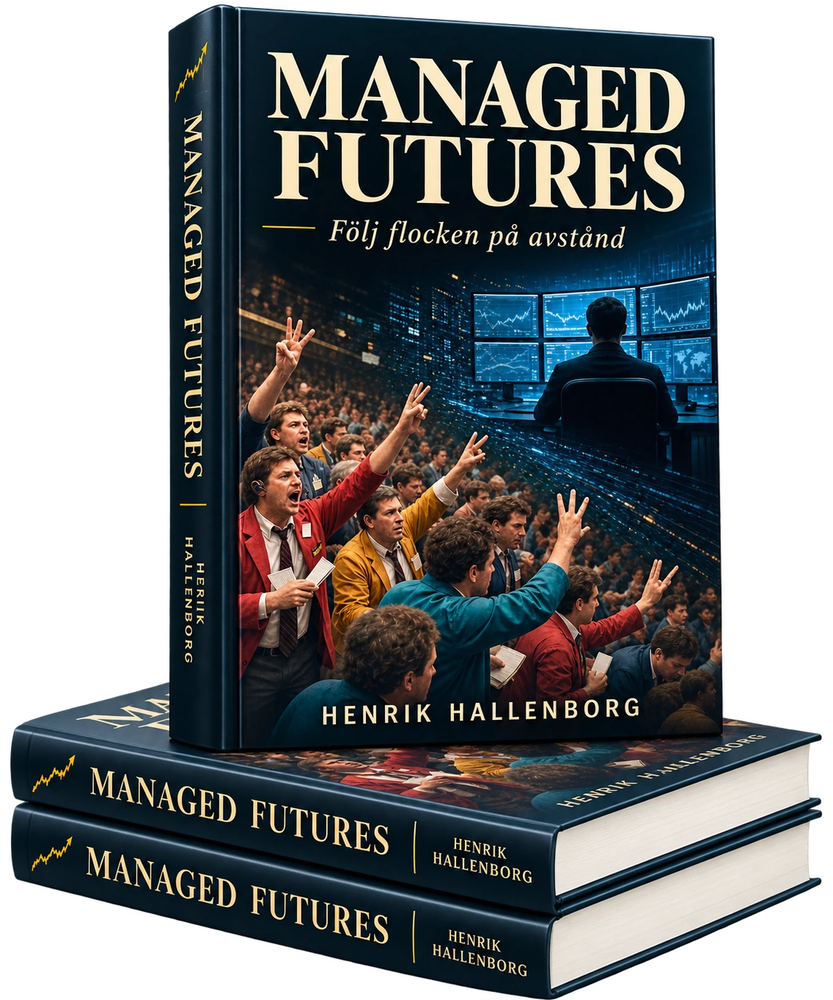

Varför trender existerar
Om ekonomisk tröghet, kapitalflöden och beteenden som gör att prisrörelser kan fortsätta.

Henrik Hallenborg
Följ flocken på avstånd
En bok om Managed Futures – från Chicagos högljudda handelsgolv till dagens systematiska och kvantitativa handel på globala terminsmarknader.
Om boken
Managed Futures är en förvaltningsform som kan ta både långa och korta positioner på globala terminsmarknader.
I boken berättar Henrik Hallenborg hur Managed Futures växte fram, varför trender existerar och hur CTA-förvaltare arbetar med modeller, riskspridning och riskhantering.
Läsaren får följa utvecklingen från råvaruhandel och öppna handelsgolv till elektroniska, regelbaserade och AI-drivna marknader. Boken behandlar också begreppet Crisis Alpha, förvaltarrisken och hur trendföljning historiskt har analyserats under perioder när traditionella portföljer varit pressade. Trendföljning garanterar inte positiv avkastning eller skydd mot förlust under marknadsnedgångar.
Att följa flocken på avstånd innebär att respektera marknadens rörelser – utan att låta sig uppslukas av dem.
I boken
Om ekonomisk tröghet, kapitalflöden och beteenden som gör att prisrörelser kan fortsätta.
Om modeller, positioner, volatilitet, riskspridning och den verkliga kostnaden för disciplin.
Om begreppet Crisis Alpha och hur trendföljning historiskt har analyserats under perioder när traditionella portföljer varit pressade.
Om drawdowns, tålamod och varför den största risken inte alltid finns i själva modellen.
Digital utgåva
Ladda ned boken och läs den på dator, surfplatta eller telefon.
Till nedladdning →Tryckt utgåva
Förbeställ ett tryckt exemplar. Betalnings- och leveransinformation skickas efter förbeställningen.
Förbeställ boken →Ur boken Managed Futures – Följ flocken på avstånd
År 1998 förlorade jag 60 procent av mitt kapital. Den ryska staten hade ställt in betalningarna på delar av sin statsskuld och devalverat rubeln. Krisen spred sig snabbt över finansmarknaderna och min aktieportfölj följde med ned.
Förlusten väckte mitt intresse för stop loss och blev början på mitt arbete med systematiska och kvantitativa handelsmodeller. Min farfar, som tidigt hade investerat i Hennes & Mauritz, tog ofta med mig på investerarträffar, bland annat med Gunnar Ek från Aktiespararna. Han förstod inte varför jag använde ett särskilt uttryck för något som han tyckte var självklart.
”Jag säljer helt enkelt när förlusten blir för stor”, brukade han säga.
Det var naturligtvis precis vad en stop loss gjorde.
Efter ungefär ett halvår hade portföljen återhämtat hela förlusten. Jag lovade mig själv att aldrig mer hamna i samma situation. Erfarenheten gjorde mig försiktigare under IT-bubblan. Försiktigheten begränsade en del av vinsterna medan marknaden steg, men dämpade också förlusterna när det vände nedåt. Det var vinsterna under IT-bubblan, skyddade genom de nödutgångar jag hade byggt in i handeln, som gjorde att jag aldrig mer behövde ta vad andra skulle kalla ett riktigt jobb. I stället kunde jag fortsätta studera marknaden på heltid.
År 2001 började jag intressera mig för terminer på S&P 500. Det stora kontraktet hade ett värde på 250 dollar per indexpunkt, medan det mindre E-mini-kontraktet gjorde det möjligt att handla för 50 dollar per punkt. Därmed kunde även ett mindre konto få direkt tillgång till den amerikanska indexmarknaden.
Jag fastnade fullständigt. Året därpå lade jag aktiehandeln och övriga marknader åt sidan för att koncentrera mig på S&P 500. Målet var att under ett helt år följa varje rörelse från öppningen klockan 15.30 till dess att handeln stängde för dagen klockan 22.15 svensk tid. Jag ville se hur marknaden reagerade på nyheter, hur rörelser byggdes upp och hur dess karaktär förändrades under dagens gång.
Jag hade nyligen lämnat London för Spanien och träffat den kvinna som senare skulle bli min fru. Projektet innebar förmodligen en viss risk även för det förhållandet. Lyckligtvis äter man sent i Spanien, så när börsen stängde hann jag fortfarande till middagen.
Efter drygt ett år hade jag utvecklat modeller för handel med index. Viktigare var att jag hade upplevt många olika marknadsklimat. De beteenden jag först såg i en treminutersgraf skulle jag senare känna igen i längre tidsintervall och på helt andra marknader.
Studierna växte efter hand till att omfatta nationalekonomi, psykologi, statistik och, på senare år, datavetenskap. Göran Högberg, ekonom och författare till Finanskrönikan, blev min mentor inom nationalekonomin och genom honom fördjupade jag mig framför allt i den österrikiska skolan och ekonomer som Ludwig von Mises och Friedrich Hayek. Deras syn på marknaden som en process, där priser formas av miljontals människors beslut, påverkade också min syn på finansmarknaderna.
När jag på relativt kort tid hade läst omkring 400 böcker insåg jag hur viktig den praktiska erfarenheten är. Inte ens tusen böcker kan fullt ut förmedla marknadens brutalitet mot den som försöker ta vinster ur den med riktiga pengar.
År 2006 grundade jag Börstjänaren tillsammans med Thomas Sandström. Genom webbplatsen kunde vi publicera marknadsanalyser och nå ut till investerare. Under råvaruboomen 2007–2008 skrev jag löpande makroanalyser och marknadsbrev åt Royal Bank of Scotland, med fokus på globala trender inom bland annat råvaror, valutor och räntor. Börstjänaren blev så småningom den naturliga kontaktytan mot investerare.
År 2008 hade jag handlat aktivt för egen räkning i över tio år. Jag ansåg mig då ha byggt upp den erfarenhet och disciplin som krävdes för att börja hantera andras kapital. Att riskera sitt eget kapital är en sak. Att ansvara för någon annans är något helt annat. Som trendföljare klarade vi börskraschen bra. Därefter kom ytterligare investerare och snart gick det inte längre att sköta förvaltningen genom separata depåer och olika inloggningar för varje kund.
Jag undersökte möjligheten att bygga verksamheten inom ett svenskt fondbolag, men kostnaderna och de organisatoriska kraven förutsatte ett kapital under förvaltning som låg långt över vad jag hade vid den tiden. Att ta anställning och lämna ifrån mig kontrollen över verksamheten var inte heller ett alternativ.
Vid det laget hade jag en lång erfarenhet av aktiv terminshandel. Min amerikanske mäklare, Trenton Kimminau, föreslog att jag skulle bygga upp en egen CTA-verksamhet. Det var ett stort steg, men krävde betydligt mindre kapital än att starta ett svenskt fondbolag. Trenton hjälpte mig genom processen och med förberedelserna inför den amerikanska Series 3-examen. Lagom till dess att verksamheten skulle börja generera mer courtage lämnade han dock finansbranschen. Jag fortsatte på den väg han hade visat mig.
Samtliga resultat för CTA-programmen som anges nedan redovisas efter en förvaltningsavgift på 2 procent och en prestationsavgift på 20 procent.
År 2012 registrerades verksamheten som Commodity Trading Advisor hos National Futures Association, under tillsyn av Commodity Futures Trading Commission. Som registrerad medlem har jag därefter genomgått ett antal tillsynsgranskningar av NFA. De har omfattat fysiska besök på kontoret och genomgångar av hela verksamheten, från individuella konton till hur resultaten beräknas.
Det första CTA-programmet var Hedgehog, som startade 2012 med en minimiinvestering på endast 100 000 dollar, vilket är en låg kapitalnivå för ett trendföljande program. Efter fyra månader uppgick den öppna vinsten som mest till omkring 90 procent. Vi hade omedelbart kommit in i en kraftig spannmålstrend där priserna på majs, sojabönor och vete skenade. När priserna senare föll tillbaka från toppen och prestationsavgiften hade dragits av återstod en uppgång på 58 procent för investerarna. Intresset för mina modeller ökade snabbt.
Därefter startade jag det större och bredare trendföljande CTA-programmet Gourishankar, med en minimiinvestering på en miljon dollar. Den nivån krävdes för att modellen skulle kunna fördela risken över tillräckligt många marknader utan att positionerna blev oproportionerligt stora. Från starten 2013 till toppen i mars 2015 steg programmet med närmare 50 procent, motsvarande en geometrisk avkastning på omkring 28 procent per år.
Under 2014 rankades Gourishankar av Preqin bland de tio främsta i en global jämförelse av över 11 200 hedgefonder.
Sedan följde CTA-vintern. Under förlustperioderna arbetar jag som mest intensivt med att förstå, utveckla och förbättra modellerna. Efter ett år i drawdown började jag 2016 fördjupa mig i programmering och ta fram algoritmiska modeller med kortare tidshorisont. Med tiden blev arbetet ett andra ben inom förvaltningen: kvantitativa makrostrategier med andra drivkrafter än de långvariga trenderna.
År 2018 låg Gourishankar drygt 20 procent under startnivån och omkring 48 procent under toppen från 2015. Den utdragna nedgången gjorde att investerarna drog tillbaka sitt kapital och programmet pausades. Handeln återupptogs i april 2020 men i mindre skala. Från botten i juni 2020 till toppen i maj 2021 steg Gourishankar med omkring 84 procent och tog på mindre än ett år tillbaka större delen av den fleråriga nedgången. Programmet avvecklades slutligen i juni 2021.
Trots återhämtningen var kapitalet på 220 000 dollar per depå för litet för att fortsätta driva Gourishankar med samma breda diversifiering. Risken var att den begränsade kapitalbasen skulle göra det omöjligt att följa modellen när marknaden blev mer krävande. Med färre möjliga positioner blev resultatet mer beroende av utvecklingen på ett fåtal marknader.
Erfarenheten lärde mig att den största risken inte alltid ligger i modellen. Ibland är volatiliteten högre än investerarna klarar att uthärda. Förvaltaren har ofta större tilltro till systemet genom sin erfarenhet och detaljerade kunskap om dess konstruktion och historiska simuleringar. Investeraren saknar samma insyn och kan därför ha svårare att behålla förtroendet när en svag period drar ut på tiden.
Redan 2020 hade jag inlett handeln i Hot Commodities på en ny plattform som ett alternativ till Gourishankar. På den plattformen sänktes minimiinvesteringen till 10 000 dollar. Tillgängligheten förbättrades, men finansiering och spreadar gjorde enligt våra beräkningar handelskostnaderna omkring 30 gånger högre än med stora börshandlade terminskontrakt.
Förvaltningen utvecklades trots detta väl under de följande åren. Avkastningen från trendföljning är sällan jämnt fördelad. Den påminner snarare om en ketchupeffekt: först händer nästan ingenting, sedan kommer allt på en gång. Hot Commodities steg med 62 procent 2020 och med 95 procent 2025, efter två svaga år 2022 och 2023. Från starten till mars 2026 uppgick den geometriska årliga avkastningen till omkring 24 procent efter både plattformskostnader och förvaltningsavgifter.
När större investerare åter visade intresse för trendföljning lanserade jag 2026 det bredare CTA-programmet Arkad. Programmet bygger huvudsakligen på trendföljning men innehåller en mindre del kvantitativa makrostrategier med andra drivkrafter än starka och uthålliga trender. Med en minimiinvestering på en miljon dollar blev det möjligt att använda stora börshandlade terminskontrakt och sprida risken över ett stort antal marknader.
Under alla dessa år har verksamheten bedrivits helt online. Det har gjort det möjligt för min familj att bo i Spanien, Dallas och under ett år även i Uppsala utan att förvaltningen behövt byta form. Min dotter växte upp i USA och trodde länge att alla pappor arbetade hemifrån och tillbringade dagarna framför tjugo bildskärmar. Det hon inte förstod var varför hennes pappa, till skillnad från alla andra pappor i Texas, talade engelska med brytning. Hur mycket hon än försökte rätta mitt uttal gick brytningen inte att få bort.
Kundmötena genomfördes huvudsakligen på distans. Först under senare år har jag träffat fler investerare under en golfrunda eller över en middag, framför allt i södra Spanien, ett mecka för golfare från hela Europa.
Under dessa möten tog idén till den här boken form. Jag upptäckte att inte ens personer som arbetar professionellt med finans eller förvaltar miljardbelopp alltid har någon djupare kunskap om Managed Futures. Det är inte särskilt märkligt. Vi blir alla specialister på det vi själva arbetar med. Själv har jag svårt att bedöma om Atlas Copco är rätt värderat i förhållande till Sandvik. Företagsvärdering är helt enkelt inte mitt område.
Managed Futures och CTA-program har en starkare ställning i USA än i Sverige. Förvaltningsformen har länge använts av institutioner och förmögna investerare för att söka avkastning från andra marknader och rörelser än dem som driver aktiemarknaden. Den kan också användas i mindre portföljer där investeraren söker ett alternativ till aktier och obligationer.
Syftet med den här boken är att förklara hur förvaltningsformen fungerar och varför jag, när investerare granskar verksamheten – det som brukar kallas due diligence – sällan ger de marknadsprognoser som ofta efterfrågas. Trendföljande CTA-program handlar inte om att förutse framtiden eller slå ett aktieindex. En investering kan utgöra en del av en större portfölj, med uppgiften att söka absolut avkastning på många olika marknader.
Boken är skriven för den som vill förstå en annan väg till avkastning – en väg som inte förutsätter att aktiemarknaden alltid måste stiga.
Managed Futures står utanför den traditionella investerarflocken. Samtidigt bygger förvaltningen ofta på att följa de trender som flockens samlade beteende skapar.
Madrid, september 2026
Henrik Hallenborg